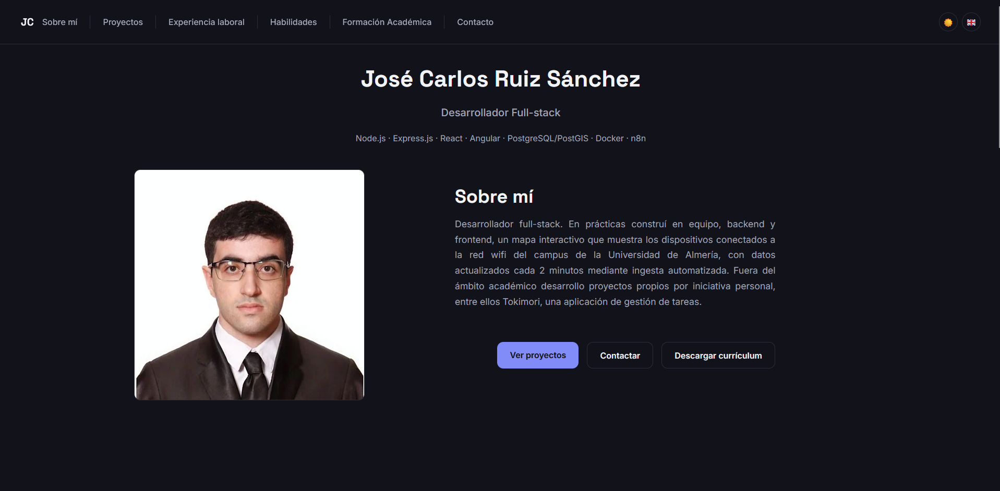
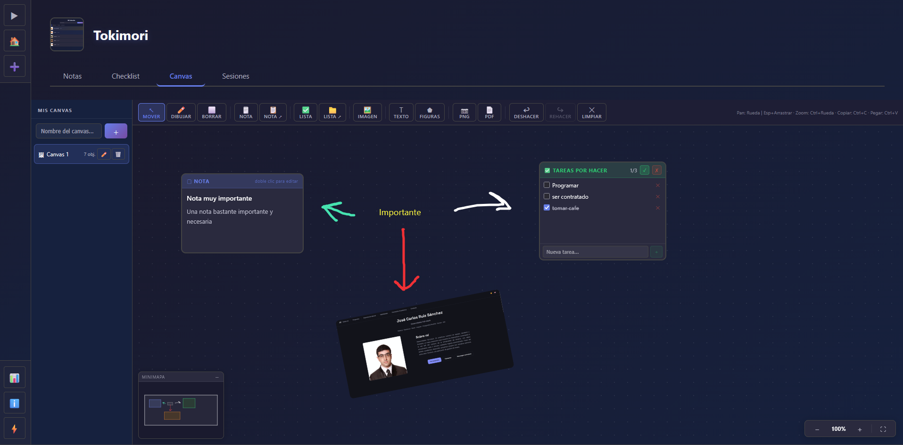

Proyectos
Proyectos
Esta página recoge mis proyectos como una cronología, siguiendo la misma división que mi currículum. Son proyectos que desarrollo por iniciativa personal.
Cronología
Mis proyectos ordenados en el tiempo. Usa el buscador para filtrar por nombre o tecnología, y el desplegable para cambiar el orden.
-

Septiembre 2026 – en curso
Portfolio
Proyecto personal
Este mismo sitio web: un portfolio personal multipágina (Sobre mí, Proyectos, Experiencia, Habilidades, Formación y Contacto) construido con HTML, CSS y JavaScript puro, sin frameworks ni paso de build, y desplegado en GitHub Pages. Nace para dar contexto al currículum y enseñar con más detalle lo que sé hacer.
- Sitio de siete páginas en HTML, CSS y JavaScript puro, sin frameworks ni bundler.
- Bilingüe español/inglés con un diccionario i18n propio en JavaScript; el idioma y el tema elegidos se recuerdan entre visitas con localStorage.
- Tema claro y oscuro que respeta la preferencia del sistema (prefers-color-scheme).
- Componentes interactivos hechos a mano: carruseles con arrastre táctil, cronologías con buscador y ordenación, y menú responsive.
- Animaciones de aparición al hacer scroll con IntersectionObserver.
- Atención a la accesibilidad (enlace para saltar al contenido, roles ARIA, aria-expanded) y al SEO (meta description, Open Graph, Twitter Card, canonical) en cada página.
- Entorno de desarrollo local con Docker y browser-sync con recarga automática.
-

Febrero 2026 – Agosto 2026
Tokimori
Proyecto personal · Full-stack · Arquitectura de microservicios
Aplicación web full-stack para gestionar una colección personal de elementos con seguimiento de tiempo, notas en Markdown, checklists y un lienzo visual por elemento. Construida sobre una arquitectura de 6 microservicios en Node.js/TypeScript tras un API Gateway (nginx), con frontend en React 19 y despliegue completo con Docker Compose.
- Diseñé una arquitectura de 6 microservicios (auth, items, colección, notas, objetivos/canvas, sesiones) en Node.js + Express 5 + TypeScript, cada uno con su responsabilidad y base de datos MySQL compartida (8 tablas).
- Implementé un API Gateway con nginx como único punto de entrada público; los servicios internos no son accesibles desde fuera de la red Docker, con enrutado por path al frontend y a cada servicio.
- Autenticación con JWT (tokens de 7 días) sobre cookies secure, hashing con bcrypt, y endurecimiento con helmet, rate limiting y CORS configurable.
- Desarrollé un canvas visual por elemento con la HTML5 Canvas API sin librerías: dibujo libre, formas, imágenes y texto, con arrastre, redimensionado y rotación, historial de deshacer/rehacer y control de capas (z-index).
- Frontend en React 19 + Vite 7 + React Router 7 + TypeScript, con React Compiler, CSS Modules, sistema de i18n propio (es/en) e interfaz con tema claro/oscuro/automático y color de acento configurable.
- Creé utilidades a medida: drag & drop con animaciones FLIP (hook useFlipList), render de Markdown propio, temporizador flotante persistente entre páginas y notificaciones del navegador.
- Panel de estadísticas globales (horas totales, racha de días, gráfico de 7 días), sistema de logros desbloqueables, panel de administración y cuenta demo.
- Testing con Vitest + Testing Library (frontend) y Jest + Supertest (backend); contenerización completa con Docker Compose separando configuración de producción (frontend compilado servido por nginx) y override de desarrollo (Vite hot-reload).
No hay proyectos que coincidan con la búsqueda.